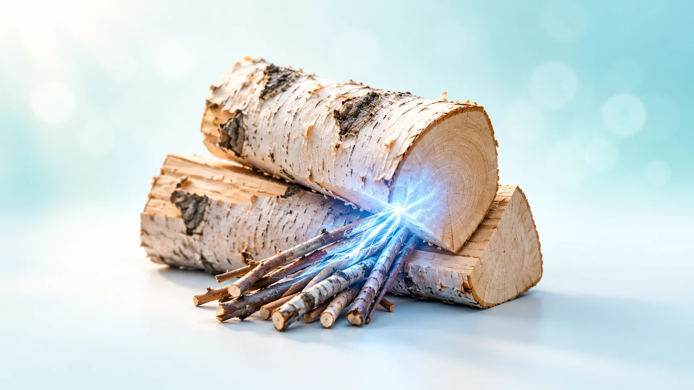
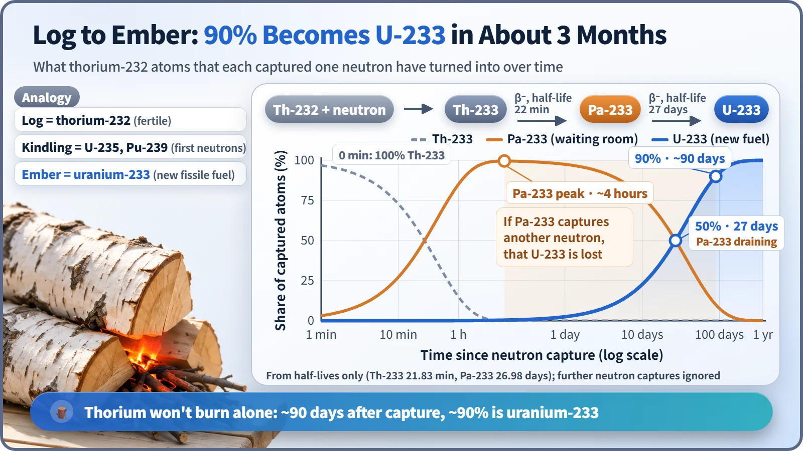
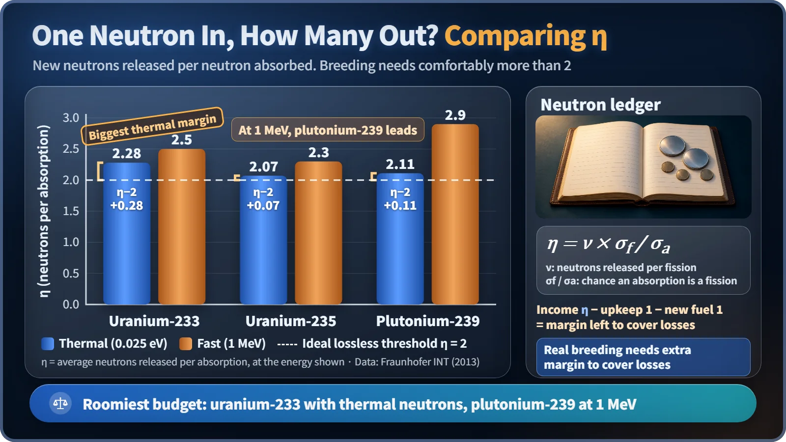

Society, Environment & the Future · 297
A Log Won't Light Without Kindling — The Thorium Fuel Cycle Explained
Thorium-232 needs fissile kindling and about three months to become uranium-233, a fuel with the roomiest neutron budget in thermal reactors.

Thorium-232 is not a fuel that burns on its own. It is a fertile material: after absorbing a neutron supplied by fissile "kindling" such as uranium-235 or plutonium-239, it turns into fissile uranium-233 over a few months. The thorium fuel cycle is the whole process of making and burning that uranium-233. [1]
Three to four times more common, yet almost unused
Where a tonne of the Earth's crust holds about 2.7 grams of uranium, it holds roughly 9.6 grams of thorium, three to four times as much. With that much of it around, you would think power plants switched to thorium long ago. Yet not a single commercial nuclear plant today runs on thorium in earnest. The reason can be found at a campsite. [2]
Ever tried lighting a log with a lighter?
Hold a lighter to a thick log for as long as you like and it will not catch. First some kindling, newspaper or small twigs, has to burn. Its heat slowly warms the log until the log turns into glowing embers on its own, and from then on the burning log passes the fire to the next one.
Thorium is exactly that log. Thorium-232 does not split when a neutron hits it. Nuclear engineers call this kind of material fertile: not a fuel that burns directly, but a raw material that can be turned into fuel. Uranium-235 and plutonium-239, which split and release energy as soon as a neutron strikes them, are fissile. They play the role of kindling.
So thorium alone will not start a chain reaction. Kindling to supply the first neutrons, meaning enriched uranium or plutonium, always has to be there too. The thorium fuel cycle is the whole process of using neutrons to turn thorium into a new fuel, uranium-233, and then burning it.
Three months from log to ember

The transformation takes three steps. When thorium-232 swallows one neutron, it becomes thorium-233. With a half-life of about 22 minutes, it quickly emits a beta particle and turns into protactinium-233 (Pa-233). A half-life is the time it takes for an amount to fall by half. Pa-233 is in no hurry: its half-life is about 27 days. Only when it beta-decays once more does it become fissile uranium-233. [3]
Working from the half-lives alone, it takes about 27 days for half of the neutron-struck thorium to become uranium-233, and about 90 days for 90% of it. The log needs roughly three months to turn into a glowing ember.
That wait hides a trap. If a Pa-233 nucleus sitting in the waiting room swallows another neutron, it never becomes uranium-233 and leaks away into some other nuclide. You lose a precious neutron and the fuel it would have made. That is why some designs study taking Pa-233 out of the core and getting it back once it has turned into uranium-233.
Eat one neutron, give back how many?
Why bother with such a roundabout route? Because uranium-233 is a particularly thrifty fuel among slow neutrons, called thermal neutrons. The number that measures this is η (eta):
η = (neutrons released per fission) × (fraction of absorptions that lead to fission)
Put simply: when the fuel eats one neutron, how many does it give back on average? For fuel to multiply itself, which is called breeding, η has to exceed 2. One neutron keeps the chain reaction going, another turns a log into a new ember, and on top of that the neutrons that leak away must be covered. Conversion and breeding ratios are the bottom line of exactly this budget.

| Fuel | η, thermal neutrons | Margin above 2 | η, fast (1 MeV) |
|---|---|---|---|
| Uranium-233 | 2.28 | 0.28 | 2.5 |
| Uranium-235 | 2.07 | 0.07 | 2.3 |
| Plutonium-239 | 2.11 | 0.11 | 2.9 |
All three clear 2 with thermal neutrons, but uranium-233's margin of 0.28 is several times larger than the others, a much deeper cushion for covering leaking neutrons. That is why the thorium–uranium-233 pairing is considered almost the only combination with which breeding is possible in principle even in a thermal reactor. The light water breeder reactor at Shippingport in the US was found to hold about 1.39% more fissile material at the end of its 1977–1982 run than at the start. In the fast-neutron range, plutonium-239 has the largest η, which is why the uranium–plutonium combination suits fast breeder reactors. [2]
Two advantages, three pieces of homework
Advantages first. The resource is plentiful. And thorium-232 has a mass number 6 lower than uranium-238, so it must swallow many more neutrons to reach heavy long-lived elements such as plutonium, americium and curium; far fewer of them are produced (the exact amount depends on fuel composition and recycling). Fission products, however, form in much the same way as with uranium fuel, so the claim that thorium "makes no waste" is an exaggeration.
The homework is just as clear. First, kindling is always required. Second, uranium-233 comes mixed with a little uranium-232, whose descendant thallium-208 emits a strong 2.6 MeV gamma ray; remote handling and shielding make fuel fabrication harder. Third, recovering thorium and uranium-233 from used fuel by reprocessing (the THOREX process) is technically demanding, partly because thorium oxide does not dissolve easily in nitric acid, and there is far less commercial experience than on the uranium–plutonium side. [4]
Who is stacking the logs today?
India has prepared longest and most steadily. With little uranium and plenty of thorium, it drew up a three-stage plan: natural-uranium heavy water reactors make plutonium; fast breeder reactors burn that plutonium while turning thorium into uranium-233; and finally reactors run on thorium and uranium-233. India's Department of Atomic Energy announced that the stage-two prototype fast breeder reactor reached first criticality in April 2026, but the stage-three reactor is still at the design-validation stage. [5]
Molten salt reactors, which use liquid fuel, are also often mentioned alongside thorium, because a liquid fuel makes separating Pa-233 relatively easier. China has announced that its 2-megawatt experimental reactor, loaded with thorium, confirmed conversion to uranium-233. All of these remain at the experimental or demonstration stage. [2]
Key takeaways
Thorium is a log that takes neutrons from kindling and needs about three months before it becomes an ember called uranium-233. That ember keeps a particularly thrifty neutron budget in thermal reactors and produces fewer heavy long-lived elements, but strong gamma rays, difficult reprocessing and little accumulated experience remain. Thorium is neither "common, so it will take over soon" nor "a useless dream": it is one more way of using nuclear fuel, being tested step by step.